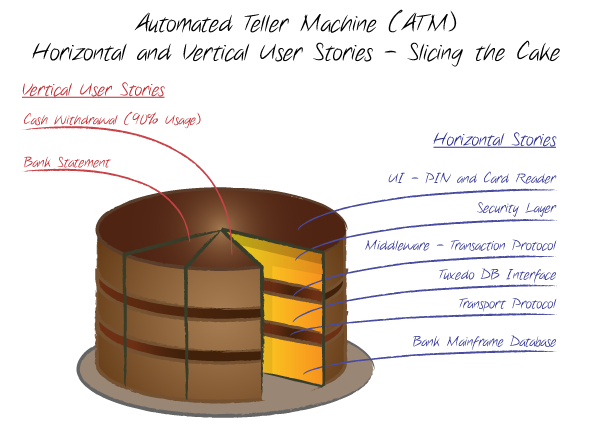

<!DOCTYPE HTML>
<html lang="" >
    <head>
        <meta charset="UTF-8">
        <meta content="text/html; charset=utf-8" http-equiv="Content-Type">
        <title>7.2. 切蛋糕 · GitBook</title>
        <meta http-equiv="X-UA-Compatible" content="IE=edge" />
        <meta name="description" content="">
        <meta name="generator" content="GitBook 3.2.3">
        
        
        
    
    <link rel="stylesheet" href="../gitbook/style.css">

    
            
                
                <link rel="stylesheet" href="../gitbook/gitbook-plugin-anchors/plugin.css">
                
            
                
                <link rel="stylesheet" href="../gitbook/gitbook-plugin-highlight/website.css">
                
            
                
                <link rel="stylesheet" href="../gitbook/gitbook-plugin-search/search.css">
                
            
                
                <link rel="stylesheet" href="../gitbook/gitbook-plugin-fontsettings/website.css">
                
            
        

    

    
        
    
        
    
        
    
        
    
        
    
        
    

        
    
    
    
    <meta name="HandheldFriendly" content="true"/>
    <meta name="viewport" content="width=device-width, initial-scale=1, user-scalable=no">
    <meta name="apple-mobile-web-app-capable" content="yes">
    <meta name="apple-mobile-web-app-status-bar-style" content="black">
    <link rel="apple-touch-icon-precomposed" sizes="152x152" href="../gitbook/images/apple-touch-icon-precomposed-152.png">
    <link rel="shortcut icon" href="../gitbook/images/favicon.ico" type="image/x-icon">

    
    <link rel="next" href="7.3.html" />
    
    
    <link rel="prev" href="7.1.html" />
    

    <style>
    @media only screen and (max-width: 640px) {
        .book-header .hidden-mobile {
            display: none;
        }
    }
    </style>
    <script>
        window["gitbook-plugin-github-buttons"] = {"buttons":[{"user":"tonydeng","repo":"user-stories-applied","type":"star","size":"small","count":true},{"user":"tonydeng","type":"follow","size":"small","width":"170","count":true},{"user":"tonydeng","type":"watch","size":"small","count":true}]};
    </script>

    </head>
    <body>
        
<div class="book">
    <div class="book-summary">
        
            
<div id="book-search-input" role="search">
    <input type="text" placeholder="Type to search" />
</div>

            
                <nav role="navigation">
                


<ul class="summary">
    
    

    

    
        
        
    
        <li class="chapter " data-level="1.1" data-path="../">
            
                <a href="../">
            
                    
                    敏捷的用户故事方法
            
                </a>
            

            
        </li>
    
        <li class="chapter " data-level="1.2" data-path="../starting.html">
            
                <a href="../starting.html">
            
                    
                    一、起步
            
                </a>
            

            
            <ul class="articles">
                
    
        <li class="chapter " data-level="1.2.1" data-path="../ch1/">
            
                <a href="../ch1/">
            
                    
                    1. 背景
            
                </a>
            

            
            <ul class="articles">
                
    
        <li class="chapter " data-level="1.2.1.1" data-path="../ch1/1.1.html">
            
                <a href="../ch1/1.1.html">
            
                    
                    1.1. 什么是用户故事？
            
                </a>
            

            
        </li>
    
        <li class="chapter " data-level="1.2.1.2" data-path="../ch1/1.2.html">
            
                <a href="../ch1/1.2.html">
            
                    
                    1.2. 细节在哪里？
            
                </a>
            

            
        </li>
    
        <li class="chapter " data-level="1.2.1.3" data-path="../ch1/1.3.html">
            
                <a href="../ch1/1.3.html">
            
                    
                    1.3. “必须多长时间完成”
            
                </a>
            

            
        </li>
    
        <li class="chapter " data-level="1.2.1.4" data-path="../ch1/1.4.html">
            
                <a href="../ch1/1.4.html">
            
                    
                    1.4. 客户团队
            
                </a>
            

            
        </li>
    
        <li class="chapter " data-level="1.2.1.5" data-path="../ch1/1.5.html">
            
                <a href="../ch1/1.5.html">
            
                    
                    1.5. 使用故事的过程是怎么样的？
            
                </a>
            

            
        </li>
    
        <li class="chapter " data-level="1.2.1.6" data-path="../ch1/1.6.html">
            
                <a href="../ch1/1.6.html">
            
                    
                    1.6. 规划发布和迭代
            
                </a>
            

            
        </li>
    
        <li class="chapter " data-level="1.2.1.7" data-path="../ch1/1.7.html">
            
                <a href="../ch1/1.7.html">
            
                    
                    1.7. 什么是验收测试？
            
                </a>
            

            
        </li>
    
        <li class="chapter " data-level="1.2.1.8" data-path="../ch1/1.8.html">
            
                <a href="../ch1/1.8.html">
            
                    
                    1.8. 为什么要变成用户故事？
            
                </a>
            

            
        </li>
    
        <li class="chapter " data-level="1.2.1.9" data-path="../ch1/brief.html">
            
                <a href="../ch1/brief.html">
            
                    
                    1.9. 小结
            
                </a>
            

            
        </li>
    

            </ul>
            
        </li>
    
        <li class="chapter " data-level="1.2.2" data-path="../ch2/">
            
                <a href="../ch2/">
            
                    
                    2. 编写故事
            
                </a>
            

            
            <ul class="articles">
                
    
        <li class="chapter " data-level="1.2.2.1" data-path="../ch2/2.1.html">
            
                <a href="../ch2/2.1.html">
            
                    
                    2.1. 独立的
            
                </a>
            

            
        </li>
    
        <li class="chapter " data-level="1.2.2.2" data-path="../ch2/2.2.html">
            
                <a href="../ch2/2.2.html">
            
                    
                    2.2. 可讨论的
            
                </a>
            

            
        </li>
    
        <li class="chapter " data-level="1.2.2.3" data-path="../ch2/2.3.html">
            
                <a href="../ch2/2.3.html">
            
                    
                    2.3. 对用户或客户有价值的
            
                </a>
            

            
        </li>
    
        <li class="chapter " data-level="1.2.2.4" data-path="../ch2/2.4.html">
            
                <a href="../ch2/2.4.html">
            
                    
                    2.4. 可评估的
            
                </a>
            

            
        </li>
    
        <li class="chapter " data-level="1.2.2.5" data-path="../ch2/2.5.html">
            
                <a href="../ch2/2.5.html">
            
                    
                    2.5. 小的
            
                </a>
            

            
        </li>
    
        <li class="chapter " data-level="1.2.2.6" data-path="../ch2/2.6.html">
            
                <a href="../ch2/2.6.html">
            
                    
                    2.6. 可测试的
            
                </a>
            

            
        </li>
    
        <li class="chapter " data-level="1.2.2.7" data-path="../ch2/2.7.html">
            
                <a href="../ch2/2.7.html">
            
                    
                    2.7. 职责
            
                </a>
            

            
        </li>
    
        <li class="chapter " data-level="1.2.2.8" data-path="../ch2/brief.html">
            
                <a href="../ch2/brief.html">
            
                    
                    2.8. 小结
            
                </a>
            

            
        </li>
    

            </ul>
            
        </li>
    
        <li class="chapter " data-level="1.2.3" data-path="../ch3/">
            
                <a href="../ch3/">
            
                    
                    3. 用户角色建模
            
                </a>
            

            
            <ul class="articles">
                
    
        <li class="chapter " data-level="1.2.3.1" data-path="../ch3/3.1.html">
            
                <a href="../ch3/3.1.html">
            
                    
                    3.1. 用户角色
            
                </a>
            

            
        </li>
    
        <li class="chapter " data-level="1.2.3.2" data-path="../ch3/3.2.html">
            
                <a href="../ch3/3.2.html">
            
                    
                    3.2. 角色建模的步骤
            
                </a>
            

            
        </li>
    
        <li class="chapter " data-level="1.2.3.3" data-path="../ch3/3.3.html">
            
                <a href="../ch3/3.3.html">
            
                    
                    3.3. “虚构人物”和“极端人物”
            
                </a>
            

            
        </li>
    
        <li class="chapter " data-level="1.2.3.4" data-path="../ch3/3.4.html">
            
                <a href="../ch3/3.4.html">
            
                    
                    3.4. 如果有现场用户该如何？
            
                </a>
            

            
        </li>
    
        <li class="chapter " data-level="1.2.3.5" data-path="../ch3/3.5.html">
            
                <a href="../ch3/3.5.html">
            
                    
                    3.5. 职责
            
                </a>
            

            
        </li>
    
        <li class="chapter " data-level="1.2.3.6" data-path="../ch3/brief.html">
            
                <a href="../ch3/brief.html">
            
                    
                    3.6. 小结
            
                </a>
            

            
        </li>
    

            </ul>
            
        </li>
    
        <li class="chapter " data-level="1.2.4" data-path="../ch4/">
            
                <a href="../ch4/">
            
                    
                    4. 收集故事
            
                </a>
            

            
            <ul class="articles">
                
    
        <li class="chapter " data-level="1.2.4.1" data-path="../ch4/4.1.html">
            
                <a href="../ch4/4.1.html">
            
                    
                    4.1. 用“拖网”来收集需求
            
                </a>
            

            
        </li>
    
        <li class="chapter " data-level="1.2.4.2" data-path="../ch4/4.2.html">
            
                <a href="../ch4/4.2.html">
            
                    
                    4.2. 够用就行，不是吗
            
                </a>
            

            
        </li>
    
        <li class="chapter " data-level="1.2.4.3" data-path="../ch4/4.3.html">
            
                <a href="../ch4/4.3.html">
            
                    
                    4.3. 方法
            
                </a>
            

            
            <ul class="articles">
                
    
        <li class="chapter " data-level="1.2.4.3.1" data-path="../ch4/4.3.1.html">
            
                <a href="../ch4/4.3.1.html">
            
                    
                    4.3.1. 用户访谈
            
                </a>
            

            
        </li>
    
        <li class="chapter " data-level="1.2.4.3.2" data-path="../ch4/4.3.2.html">
            
                <a href="../ch4/4.3.2.html">
            
                    
                    4.3.2. 问卷调查
            
                </a>
            

            
        </li>
    
        <li class="chapter " data-level="1.2.4.3.3" data-path="../ch4/4.3.3.html">
            
                <a href="../ch4/4.3.3.html">
            
                    
                    4.3.3. 观察
            
                </a>
            

            
        </li>
    
        <li class="chapter " data-level="1.2.4.3.4" data-path="../ch4/4.3.4.html">
            
                <a href="../ch4/4.3.4.html">
            
                    
                    4.3.4. 故事编写工作坊
            
                </a>
            

            
        </li>
    

            </ul>
            
        </li>
    
        <li class="chapter " data-level="1.2.4.4" data-path="../ch4/4.4.html">
            
                <a href="../ch4/4.4.html">
            
                    
                    4.4. 职责
            
                </a>
            

            
        </li>
    
        <li class="chapter " data-level="1.2.4.5" data-path="../ch4/brief.html">
            
                <a href="../ch4/brief.html">
            
                    
                    4.5. 小结
            
                </a>
            

            
        </li>
    

            </ul>
            
        </li>
    
        <li class="chapter " data-level="1.2.5" data-path="../ch5/">
            
                <a href="../ch5/">
            
                    
                    5. 与用户代理合作
            
                </a>
            

            
            <ul class="articles">
                
    
        <li class="chapter " data-level="1.2.5.1" data-path="../ch5/5.1.html">
            
                <a href="../ch5/5.1.html">
            
                    
                    5.1 用户的经理
            
                </a>
            

            
        </li>
    
        <li class="chapter " data-level="1.2.5.2" data-path="../ch5/5.2.html">
            
                <a href="../ch5/5.2.html">
            
                    
                    5.2 开发经理
            
                </a>
            

            
        </li>
    
        <li class="chapter " data-level="1.2.5.3" data-path="../ch5/5.3.html">
            
                <a href="../ch5/5.3.html">
            
                    
                    5.3 销售人员
            
                </a>
            

            
        </li>
    
        <li class="chapter " data-level="1.2.5.4" data-path="../ch5/5.4.html">
            
                <a href="../ch5/5.4.html">
            
                    
                    5.4 领域专家
            
                </a>
            

            
        </li>
    
        <li class="chapter " data-level="1.2.5.5" data-path="../ch5/5.5.html">
            
                <a href="../ch5/5.5.html">
            
                    
                    5.5 市场营销团队
            
                </a>
            

            
        </li>
    
        <li class="chapter " data-level="1.2.5.6" data-path="../ch5/5.6.html">
            
                <a href="../ch5/5.6.html">
            
                    
                    5.6 以前的用户
            
                </a>
            

            
        </li>
    
        <li class="chapter " data-level="1.2.5.7" data-path="../ch5/5.7.html">
            
                <a href="../ch5/5.7.html">
            
                    
                    5.7 客户
            
                </a>
            

            
        </li>
    
        <li class="chapter " data-level="1.2.5.8" data-path="../ch5/5.8.html">
            
                <a href="../ch5/5.8.html">
            
                    
                    5.8 培训师和技术支持
            
                </a>
            

            
        </li>
    
        <li class="chapter " data-level="1.2.5.9" data-path="../ch5/5.9.html">
            
                <a href="../ch5/5.9.html">
            
                    
                    5.9 业务分析师或系统分析师
            
                </a>
            

            
        </li>
    
        <li class="chapter " data-level="1.2.5.10" data-path="../ch5/5.10.html">
            
                <a href="../ch5/5.10.html">
            
                    
                    5.10 与用户代理合作时，做些什么？
            
                </a>
            

            
        </li>
    
        <li class="chapter " data-level="1.2.5.11" data-path="../ch5/5.11.html">
            
                <a href="../ch5/5.11.html">
            
                    
                    5.11 可以自己来吗？
            
                </a>
            

            
        </li>
    
        <li class="chapter " data-level="1.2.5.12" data-path="../ch5/5.12.html">
            
                <a href="../ch5/5.12.html">
            
                    
                    5.12 建立客户团队
            
                </a>
            

            
        </li>
    
        <li class="chapter " data-level="1.2.5.13" data-path="../ch5/5.13.html">
            
                <a href="../ch5/5.13.html">
            
                    
                    5.13 职责
            
                </a>
            

            
        </li>
    
        <li class="chapter " data-level="1.2.5.14" data-path="../ch5/brief.html">
            
                <a href="../ch5/brief.html">
            
                    
                    5.14 小结
            
                </a>
            

            
        </li>
    

            </ul>
            
        </li>
    
        <li class="chapter " data-level="1.2.6" data-path="../ch6/">
            
                <a href="../ch6/">
            
                    
                    6. 用户故事验收测试
            
                </a>
            

            
            <ul class="articles">
                
    
        <li class="chapter " data-level="1.2.6.1" data-path="../ch6/6.1.html">
            
                <a href="../ch6/6.1.html">
            
                    
                    6.1. 在写代码之前写测试
            
                </a>
            

            
        </li>
    
        <li class="chapter " data-level="1.2.6.2" data-path="../ch6/6.2.html">
            
                <a href="../ch6/6.2.html">
            
                    
                    6.2. 客户定义测试
            
                </a>
            

            
        </li>
    
        <li class="chapter " data-level="1.2.6.3" data-path="../ch6/6.3.html">
            
                <a href="../ch6/6.3.html">
            
                    
                    6.3. 测试是过程的一部分
            
                </a>
            

            
        </li>
    
        <li class="chapter " data-level="1.2.6.4" data-path="../ch6/6.4.html">
            
                <a href="../ch6/6.4.html">
            
                    
                    6.4. 多少测试才算多？
            
                </a>
            

            
        </li>
    
        <li class="chapter " data-level="1.2.6.5" data-path="../ch6/6.5.html">
            
                <a href="../ch6/6.5.html">
            
                    
                    6.5. 验收测试
            
                </a>
            

            
        </li>
    
        <li class="chapter " data-level="1.2.6.6" data-path="../ch6/6.6.html">
            
                <a href="../ch6/6.6.html">
            
                    
                    6.6. 测试类型
            
                </a>
            

            
        </li>
    
        <li class="chapter " data-level="1.2.6.7" data-path="../ch6/6.7.html">
            
                <a href="../ch6/6.7.html">
            
                    
                    6.7. 职责
            
                </a>
            

            
        </li>
    
        <li class="chapter " data-level="1.2.6.8" data-path="../ch6/brief.html">
            
                <a href="../ch6/brief.html">
            
                    
                    6.8. 小结
            
                </a>
            

            
        </li>
    

            </ul>
            
        </li>
    
        <li class="chapter " data-level="1.2.7" data-path="./">
            
                <a href="./">
            
                    
                    7. 优秀的用户故事准则
            
                </a>
            

            
            <ul class="articles">
                
    
        <li class="chapter " data-level="1.2.7.1" data-path="7.1.html">
            
                <a href="7.1.html">
            
                    
                    7.1. 从目标故事开始
            
                </a>
            

            
        </li>
    
        <li class="chapter active" data-level="1.2.7.2" data-path="7.2.html">
            
                <a href="7.2.html">
            
                    
                    7.2. 切蛋糕
            
                </a>
            

            
        </li>
    
        <li class="chapter " data-level="1.2.7.3" data-path="7.3.html">
            
                <a href="7.3.html">
            
                    
                    7.3. 编写封闭的故事
            
                </a>
            

            
        </li>
    
        <li class="chapter " data-level="1.2.7.4" data-path="7.4.html">
            
                <a href="7.4.html">
            
                    
                    7.4. 卡片约束
            
                </a>
            

            
        </li>
    
        <li class="chapter " data-level="1.2.7.5" data-path="7.5.md">
            
                <span>
            
                    
                    7.5. 根据实现时间来确定故事规模
            
                </a>
            

            
        </li>
    
        <li class="chapter " data-level="1.2.7.6" data-path="7.6.md">
            
                <span>
            
                    
                    7.6. 有些需求并不是故事
            
                </a>
            

            
        </li>
    
        <li class="chapter " data-level="1.2.7.7" data-path="7.7.md">
            
                <span>
            
                    
                    7.7. 在故事里包含故事角色
            
                </a>
            

            
        </li>
    
        <li class="chapter " data-level="1.2.7.8" data-path="7.8.md">
            
                <span>
            
                    
                    7.8. 只为一个用户编写
            
                </a>
            

            
        </li>
    
        <li class="chapter " data-level="1.2.7.9" data-path="7.9.md">
            
                <span>
            
                    
                    7.9. 以主动语态编写
            
                </a>
            

            
        </li>
    
        <li class="chapter " data-level="1.2.7.10" data-path="7.10.md">
            
                <span>
            
                    
                    7.10. 有客户编写
            
                </a>
            

            
        </li>
    
        <li class="chapter " data-level="1.2.7.11" data-path="7.11.md">
            
                <span>
            
                    
                    7.11. 不要忘记意图
            
                </a>
            

            
        </li>
    
        <li class="chapter " data-level="1.2.7.12" data-path="brief.md">
            
                <span>
            
                    
                    7.12. 小结
            
                </a>
            

            
        </li>
    

            </ul>
            
        </li>
    

            </ul>
            
        </li>
    

    

    <li class="divider"></li>

    <li>
        <a href="https://www.gitbook.com" target="blank" class="gitbook-link">
            Published with GitBook
        </a>
    </li>
</ul>


                </nav>
            
        
    </div>

    <div class="book-body">
        
            <div class="body-inner">
                
                    

<div class="book-header" role="navigation">
    

    <!-- Title -->
    <h1>
        <i class="fa fa-circle-o-notch fa-spin"></i>
        <a href=".." >7.2. 切蛋糕</a>
    </h1>
</div>


                    <div class="page-wrapper" tabindex="-1" role="main">
                        <div class="page-inner">
                            
<div id="book-search-results">
    <div class="search-noresults">
    
                                <section class="normal markdown-section">
                                
                                <h1 id="72-&#x5207;&#x86CB;&#x7CD5;"><a name="72-&#x5207;&#x86CB;&#x7CD5;" class="plugin-anchor" href="#72-&#x5207;&#x86CB;&#x7CD5;"><i class="fa fa-link" aria-hidden="true"></i></a>7.2. &#x5207;&#x86CB;&#x7CD5;</h1>
<p>
</p>
<p>&#x5F53;&#x9762;&#x4E34;&#x4E00;&#x4E2A;&#x5927;&#x7684;&#x6545;&#x4E8B;&#x7684;&#x65F6;&#x5019;&#xFF0C;&#x901A;&#x5E38;&#x6709;&#x8BB8;&#x591A;&#x65B9;&#x6CD5;&#x53EF;&#x4EE5;&#x5C06;&#x5B83;&#x5206;&#x89E3;&#x6210;&#x8F83;&#x5C0F;&#x7684;&#x6545;&#x4E8B;&#x3002;&#x8BB8;&#x591A;<strong>&#x5F00;&#x53D1;&#x4EBA;&#x5458;&#x9996;&#x5148;&#x60F3;&#x5230;&#x7684;&#x662F;&#x5C06;&#x6545;&#x4E8B;&#x6309;&#x7167;&#x6280;&#x672F;&#x8DEF;&#x7EBF;&#x5206;&#x5272;</strong>&#x3002;</p>
<p>&#x6BD4;&#x5982;&#xFF0C;&#x5047;&#x8BBE;&#x56E2;&#x961F;&#x89C9;&#x5F97;&#x6545;&#x4E8B;&#x201C;&#x6C42;&#x804C;&#x8005;&#x53EF;&#x4EE5;&#x53D1;&#x5E03;&#x7B80;&#x5386;&#x201D;&#x5728;&#x5F53;&#x524D;&#x8FD9;&#x8F6E;&#x8FED;&#x4EE3;&#x4E2D;&#x592A;&#x5927;&#x4E86;&#xFF0C;&#x5C31;&#x5FC5;&#x987B;&#x5206;&#x5272;&#x3002;&#x5F00;&#x53D1;&#x4EBA;&#x5458;&#x53EF;&#x80FD;&#x60F3;&#x6CBF;&#x7740;&#x6280;&#x672F;&#x8FB9;&#x754C;&#x5206;&#x5272;&#xFF0C;&#x793A;&#x4F8B;&#x5982;&#x4E0B;&#xFF1A;</p>
<ul>
<li>&#x6C42;&#x804C;&#x8005;&#x53EF;&#x4EE5;&#x586B;&#x5199;&#x7B80;&#x5386;&#x8868;</li>
<li>&#x7B80;&#x5386;&#x8868;&#x4E0A;&#x7684;&#x4FE1;&#x606F;&#x88AB;&#x5199;&#x5165;&#x6570;&#x636E;&#x5E93;</li>
</ul>
<p>&#x5728;&#x8FD9;&#x4E2A;&#x6848;&#x4F8B;&#x4E2D;&#xFF0C;&#x4E00;&#x4E2A;&#x6545;&#x4E8B;&#x4F1A;&#x5728;&#x5F53;&#x524D;&#x8FED;&#x4EE3;&#x4E2D;&#x5B8C;&#x6210;&#xFF0C;&#x800C;&#x53E6;&#x4E00;&#x4E2A;&#x6545;&#x4E8B;&#x5219;&#xFF08;&#x5F88;&#x53EF;&#x80FD;&#xFF09;&#x63A8;&#x8FDF;&#x5230;&#x4E0B;&#x4E00;&#x8F6E;&#x8FED;&#x4EE3;&#x91CC;&#x3002;&#x8FD9;&#x79CD;&#x505A;&#x6CD5;&#x7684;&#x7F3A;&#x9677;&#x662F;&#xFF0C;&#x6CA1;&#x6709;&#x4E00;&#x4E2A;&#x6545;&#x4E8B;&#x662F;&#x5355;&#x72EC;&#x5BF9;&#x7528;&#x6237;&#x5F88;&#x6709;&#x7528;&#x7684;&#x3002;</p>
<blockquote>
<p>&#x7B2C;&#x4E00;&#x4E2A;&#x6545;&#x4E8B;&#x8BF4;&#x7684;&#x662F;&#x6C42;&#x804C;&#x8005;&#x53EF;&#x4EE5;&#x586B;&#x5199;&#x7B80;&#x5386;&#x8868;&#xFF0C;&#x4F46;&#x6570;&#x636E;&#x6CA1;&#x6709;&#x88AB;&#x4FDD;&#x6301;&#x3002;</p>
<p>&#x7B2C;&#x4E8C;&#x4E2A;&#x6545;&#x4E8B;&#x8BF4;&#x7684;&#x662F;&#x4ECE;&#x7B80;&#x5386;&#x8868;&#x4E0A;&#x641C;&#x96C6;&#x7684;&#x6570;&#x636E;&#x4F1A;&#x5199;&#x5165;&#x6570;&#x636E;&#x5E93;&#x3002;&#x5982;&#x679C;&#x6CA1;&#x6709;&#x7B2C;&#x4E00;&#x4E2A;&#x6545;&#x4E8B;&#x63D0;&#x4F9B;&#x8868;&#x683C;&#x7ED9;&#x7528;&#x6237;&#xFF0C;&#x7B2C;&#x4E8C;&#x4E2A;&#x6545;&#x4E8B;&#x5C31;&#x6CA1;&#x6709;&#x4EC0;&#x4E48;&#x4EF7;&#x503C;&#x3002;</p>
</blockquote>
<p>&#x4E00;&#x4E2A;&#x66F4;&#x597D;&#x7684;&#x529E;&#x6CD5;&#x662F;&#x6362;&#x4E00;&#x79CD;&#x65B9;&#x5F0F;&#x7F16;&#x5199;&#x6545;&#x4E8B;&#xFF0C;&#x6BCF;&#x4E2A;&#x6545;&#x4E8B;&#x90FD;&#x63D0;&#x4F9B;&#x67D0;&#x79CD;&#x7A0B;&#x5EA6;&#x7684;&#x5B8C;&#x6574;&#xFF08;<code>end-to-end</code>&#xFF09;&#x7684;&#x529F;&#x80FD;&#x3002;</p>
<blockquote>
<p>Bill Wake&#xFF08;2003a&#xFF09;&#x5C06;&#x5176;&#x79F0;&#x4E4B;&#x4E3A;&#x201C;&#x5207;&#x86CB;&#x7CD5;&#x201D;(<code>slicing the cake</code>)</p>
</blockquote>
<p></p>
<p>&#x6839;&#x636E;&#x8FD9;&#x4E2A;<strong>&#x5207;&#x86CB;&#x7CD5;&#x539F;&#x5219;</strong>&#xFF0C;&#x6211;&#x4EEC;&#x53EF;&#x4EE5;&#x628A;&#x6545;&#x4E8B;&#x201C;&#x6C42;&#x804C;&#x8005;&#x53EF;&#x4EE5;&#x53D1;&#x5E03;&#x7B80;&#x5386;&#x201D;&#x50CF;&#x4E0B;&#x9762;&#x8FD9;&#x6837;&#x5206;&#x3002;</p>
<ul>
<li>&#x6C42;&#x804C;&#x8005;&#x53EF;&#x4EE5;&#x63D0;&#x4EA4;&#x7B80;&#x5386;&#xFF0C;&#x7B80;&#x5386;&#x4E0A;&#x53EA;&#x5305;&#x62EC;&#x8BF8;&#x5982;&#x540D;&#x5B57;&#x3001;&#x5730;&#x5740;&#x3001;&#x548C;&#x6559;&#x80B2;&#x80CC;&#x666F;&#x8FD9;&#x6837;&#x7684;&#x57FA;&#x672C;&#x4FE1;&#x606F;</li>
<li>&#x6C42;&#x804C;&#x8005;&#x53EF;&#x4EE5;&#x63D0;&#x4EA4;&#x7B80;&#x5386;&#xFF0C;&#x7B80;&#x5386;&#x4E0A;&#x5305;&#x62EC;&#x96C7;&#x4E3B;&#x60F3;&#x770B;&#x7684;&#x6240;&#x6709;&#x4FE1;&#x606F;</li>
</ul>
<p>&#x5728;&#x7F16;&#x5199;&#x7528;&#x6237;&#x6545;&#x4E8B;&#x65F6;&#xFF0C;&#x66F4;&#x503E;&#x5411;&#x7F16;&#x5199;&#x50CF;&#x4E00;&#x5757;&#x5B8C;&#x6574;&#x86CB;&#x7CD5;&#x90A3;&#x6837;&#x529F;&#x80FD;&#x5B8C;&#x6574;&#x7684;&#x6545;&#x4E8B;&#x3002;</p>
<p>&#x5177;&#x4F53;&#x6709;&#x4E24;&#x4E2A;&#x539F;&#x56E0;:</p>
<ul>
<li>&#x9996;&#x5148;&#xFF0C;&#x5728;&#x5F00;&#x53D1;&#x4E2D;&#xFF0C;<strong>&#x53CA;&#x65E9;&#x6D89;&#x53CA;&#x8F6F;&#x4EF6;&#x5E94;&#x7528;&#x67B6;&#x6784;&#x7684;&#x6BCF;&#x4E00;&#x5C42;&#x80FD;&#x591F;&#x6709;&#x6548;&#x5730;&#x964D;&#x4F4E;&#x6700;&#x540E;&#x65F6;&#x523B;&#x624D;&#x53D1;&#x73B0;&#x5C42;&#x6B21;&#x67B6;&#x6784;&#x65B9;&#x9762;&#x95EE;&#x9898;&#x7684;&#x98CE;&#x9669;</strong>&#x3002;</li>
<li>&#x5176;&#x6B21;&#xFF0C;&#x5C3D;&#x7BA1;&#x4E0D;&#x5341;&#x5206;&#x5B8C;&#x7F8E;&#xFF0C;<strong>&#x5373;&#x4F7F;&#x53EA;&#x63D0;&#x4F9B;&#x90E8;&#x5206;&#x529F;&#x80FD;&#xFF0C;&#x4F46;&#x53EA;&#x8981;&#x53D1;&#x5E03;&#x7684;&#x529F;&#x80FD;&#x53EF;&#x4EE5;&#x8DD1;&#xFF0C;&#x5C31;&#x53EF;&#x4EE5;&#x653E;&#x5FC3;&#x7684;&#x628A;&#x5E94;&#x7528;&#x7A0B;&#x5E8F;&#x53D1;&#x5E03;&#x7ED9;&#x7528;&#x6237;&#x4F7F;&#x7528;</strong>&#x3002;</li>
</ul>
<h2 id="&#x6269;&#x5C55;&#x9605;&#x8BFB;"><a name="&#x6269;&#x5C55;&#x9605;&#x8BFB;" class="plugin-anchor" href="#&#x6269;&#x5C55;&#x9605;&#x8BFB;"><i class="fa fa-link" aria-hidden="true"></i></a>&#x6269;&#x5C55;&#x9605;&#x8BFB;</h2>
<ul>
<li><a href="http://tracks.roojoom.com/r/1757" target="_blank">Slicing the Cake - User story slicing</a></li>
<li><a href="http://www.linkedin.com/pulse/slicing-cake-useful-guidelines-breakdown-development-work-mizutani" target="_blank">Slicing your development as a multi-layer cake -- Luis Fernando Mizutani</a></li>
<li><a href="https://www.agileconference.org/wp-content/uploads/2015/10/How-to-Slice-Product-Backlog-Items-Matt-Roadnight-v1-2.pdf" target="_blank">Slicing Stories - Agile Business Conference</a></li>
</ul>

                                
                                </section>
                            
    </div>
    <div class="search-results">
        <div class="has-results">
            
            <h1 class="search-results-title"><span class='search-results-count'></span> results matching "<span class='search-query'></span>"</h1>
            <ul class="search-results-list"></ul>
            
        </div>
        <div class="no-results">
            
            <h1 class="search-results-title">No results matching "<span class='search-query'></span>"</h1>
            
        </div>
    </div>
</div>

                        </div>
                    </div>
                
            </div>

            
                
                <a href="7.1.html" class="navigation navigation-prev " aria-label="Previous page: 7.1. 从目标故事开始">
                    <i class="fa fa-angle-left"></i>
                </a>
                
                
                <a href="7.3.html" class="navigation navigation-next " aria-label="Next page: 7.3. 编写封闭的故事">
                    <i class="fa fa-angle-right"></i>
                </a>
                
            
        
    </div>

    <script>
        var gitbook = gitbook || [];
        gitbook.push(function() {
            gitbook.page.hasChanged({"page":{"title":"7.2. 切蛋糕","level":"1.2.7.2","depth":3,"next":{"title":"7.3. 编写封闭的故事","level":"1.2.7.3","depth":3,"path":"ch7/7.3.md","ref":"ch7/7.3.md","articles":[]},"previous":{"title":"7.1. 从目标故事开始","level":"1.2.7.1","depth":3,"path":"ch7/7.1.md","ref":"ch7/7.1.md","articles":[]},"dir":"ltr"},"config":{"gitbook":"*","theme":"default","variables":{},"plugins":["anchors","ga","github-buttons"],"pluginsConfig":{"search":{},"lunr":{"maxIndexSize":1000000,"ignoreSpecialCharacters":false},"fontsettings":{"theme":"white","family":"sans","size":2},"highlight":{},"github-buttons":{"buttons":[{"user":"tonydeng","repo":"user-stories-applied","type":"star","size":"small","count":true},{"user":"tonydeng","type":"follow","size":"small","width":"170","count":true},{"user":"tonydeng","type":"watch","size":"small","count":true}]},"ga":{"configuration":"auto","token":"UA-80673215-1"},"sharing":{"facebook":true,"twitter":true,"google":false,"weibo":false,"instapaper":false,"vk":false,"all":["facebook","google","twitter","weibo","instapaper"]},"theme-default":{"styles":{"website":"styles/website.css","pdf":"styles/pdf.css","epub":"styles/epub.css","mobi":"styles/mobi.css","ebook":"styles/ebook.css","print":"styles/print.css"},"showLevel":false},"anchors":{}},"structure":{"langs":"LANGS.md","readme":"README.md","glossary":"GLOSSARY.md","summary":"SUMMARY.md"},"pdf":{"pageNumbers":true,"fontSize":12,"fontFamily":"Arial","paperSize":"a4","chapterMark":"pagebreak","pageBreaksBefore":"/","margin":{"right":62,"left":62,"top":56,"bottom":56}},"styles":{"website":"styles/website.css","pdf":"styles/pdf.css","epub":"styles/epub.css","mobi":"styles/mobi.css","ebook":"styles/ebook.css","print":"styles/print.css"}},"file":{"path":"ch7/7.2.md","mtime":"2019-02-28T04:47:42.287Z","type":"markdown"},"gitbook":{"version":"3.2.3","time":"2019-02-28T04:48:47.010Z"},"basePath":"..","book":{"language":""}});
        });
    </script>
</div>

        
    <script src="../gitbook/gitbook.js"></script>
    <script src="../gitbook/theme.js"></script>
    
        
        <script src="../gitbook/gitbook-plugin-ga/plugin.js"></script>
        
    
        
        <script src="../gitbook/gitbook-plugin-github-buttons/plugin.js"></script>
        
    
        
        <script src="../gitbook/gitbook-plugin-search/search-engine.js"></script>
        
    
        
        <script src="../gitbook/gitbook-plugin-search/search.js"></script>
        
    
        
        <script src="../gitbook/gitbook-plugin-lunr/lunr.min.js"></script>
        
    
        
        <script src="../gitbook/gitbook-plugin-lunr/search-lunr.js"></script>
        
    
        
        <script src="../gitbook/gitbook-plugin-sharing/buttons.js"></script>
        
    
        
        <script src="../gitbook/gitbook-plugin-fontsettings/fontsettings.js"></script>
        
    

    </body>
</html>

